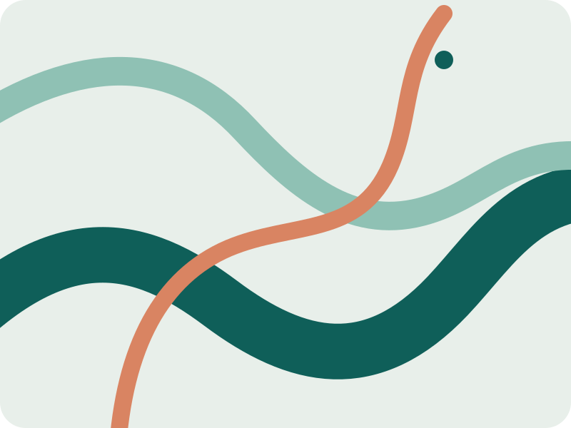

Confluence identity proof
The symbol contains no letters: three currents meet inside one coherent frame. Textual identity remains the complete name Md Imrul Hassan. Native-size rows are shown at 1× and are not enlarged.
Native favicon · light and dark tab surfaces
16px · light
16px · dark
24px · light
24px · dark
32px · light
32px · dark
48px · light
48px · dark
Full-name header lockup · 390px and desktop
Md Imrul Hassan
Md Imrul Hassan
Symbol family · mark and touch export
Relationship to the homepage artwork
ENGINEER · RESEARCHER · MAKER
Md Imrul Hassan
The same three-current vocabulary moves between compact identity and open editorial artwork without making the favicon a miniature illustration.
